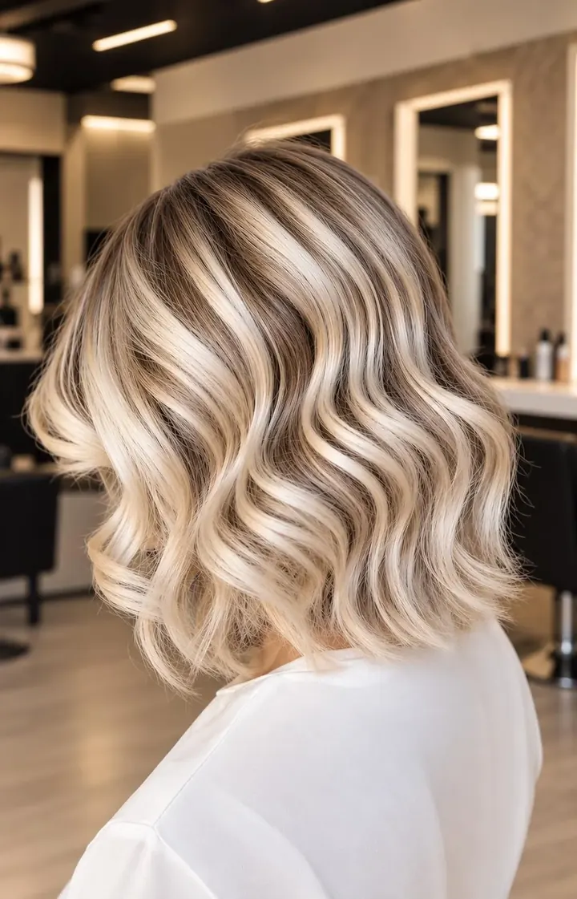
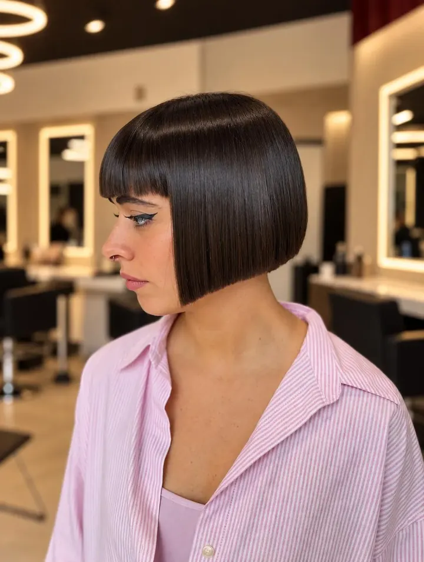
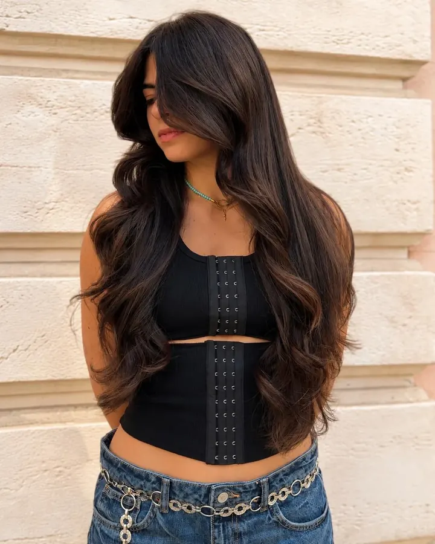
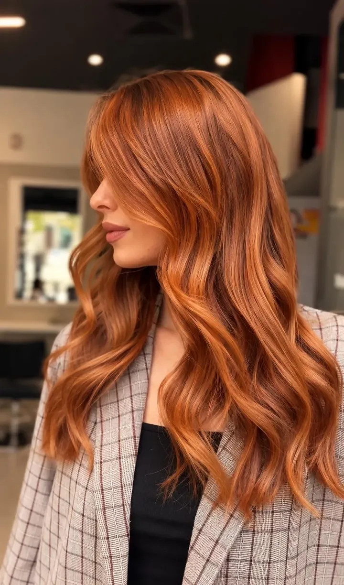
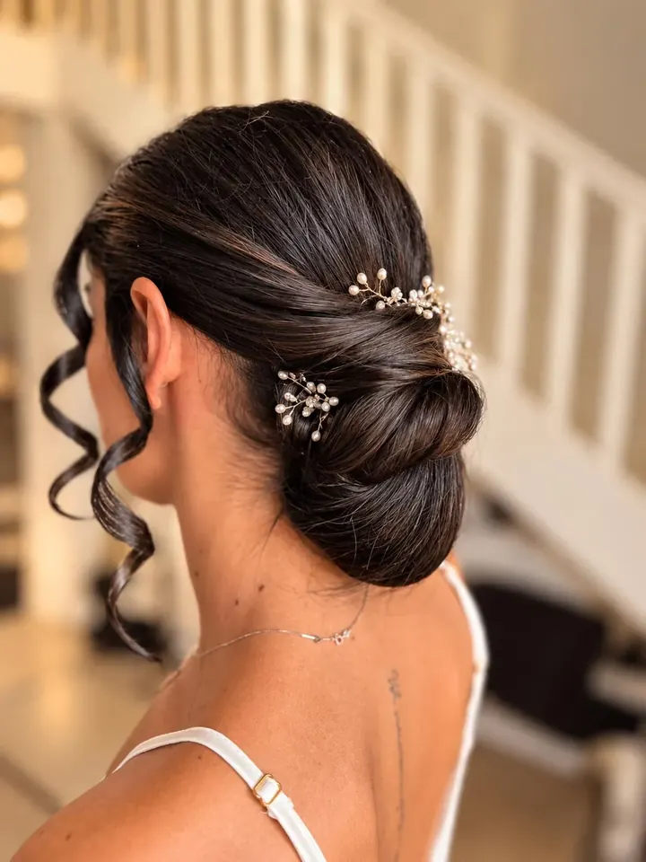
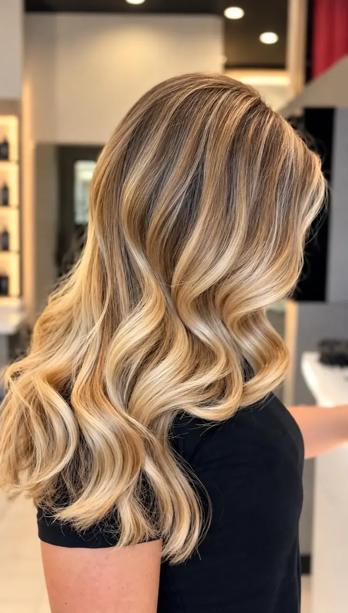
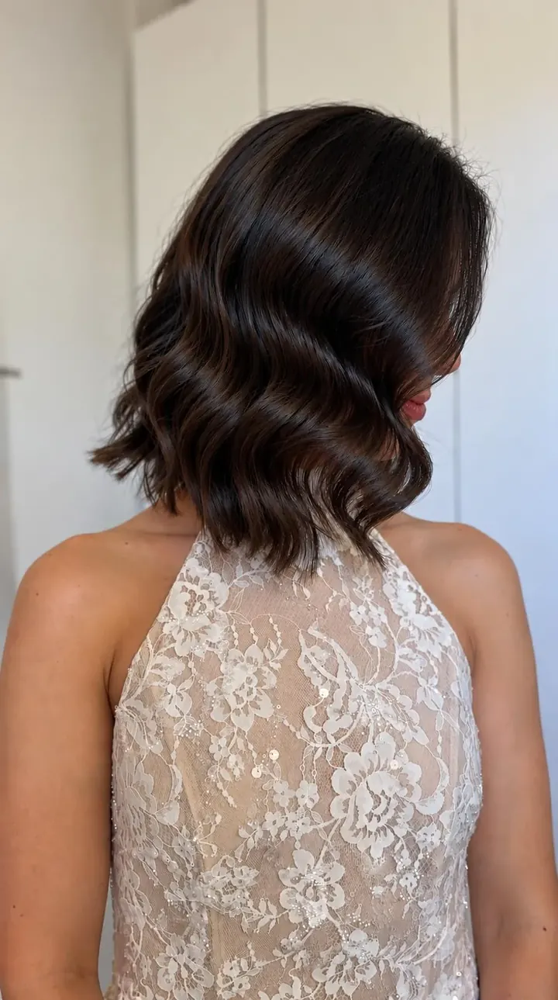
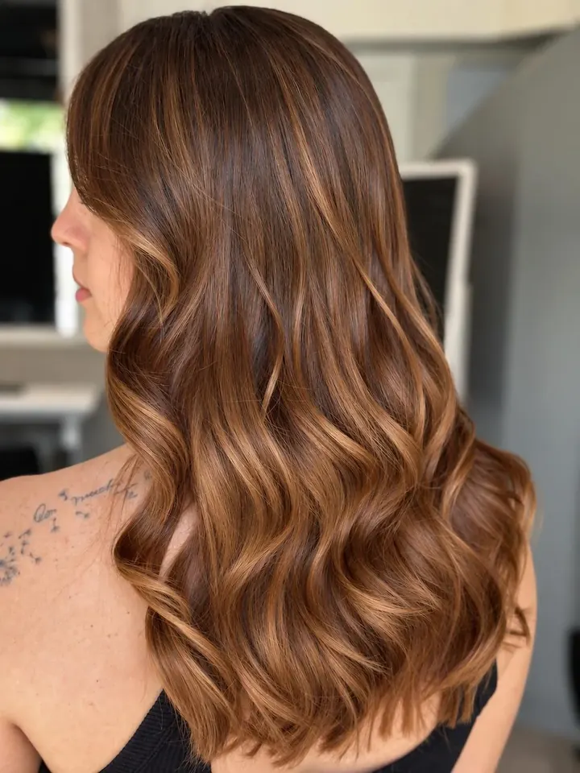
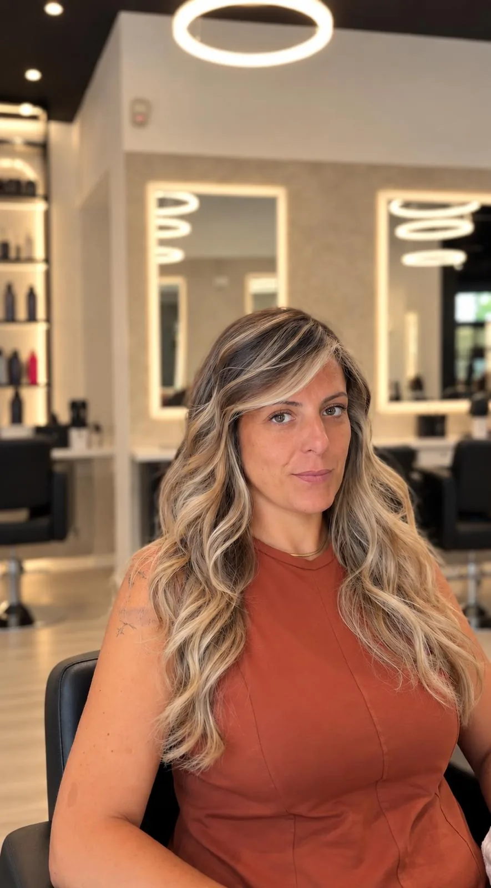

01 / La firma
Non un colore
qualsiasi. Il tuo.
Un colore pensato per te, per la tua base, la tua personalità e il movimento dei tuoi capelli.

BlondeBiondo SpecialLuce piena, onde morbide. 
BrunetteBobLinea netta, frangia piena. 
BrunetteCastano BrunetteProfondità intensa, eleganza naturale. 
RedRamePersonalità e carattere. 
SposaRaccolto SposaMorbido, curato in ogni dettaglio. 
BlondeBiondo LuminosoSfumature calde fino alle punte. 
BrunetteOnde BrunetteMovimento e lucentezza. 
CaramelCaramelCalore prezioso, riflessi armoniosi. 
CreativeColor ArtIl colore come segno. 
CreativeColor BlockUn blocco di colore, netto.
Foto reali dei lavori del salone.
Trova il tuo servizio↗︎La tecnica
La bellezza
è un risultato.
La tecnica fa
la differenza.
Dietro ogni lavoro ci sono ascolto, consulenza e conoscenza del colore. Non seguiamo soltanto una tendenza: la interpretiamo per te.
Effetto Bottega, il nostro servizio firma: schiariture a mano libera o con stagnole, sfumate in modo graduale fino alle punte, sulla tonalità giusta per te.
